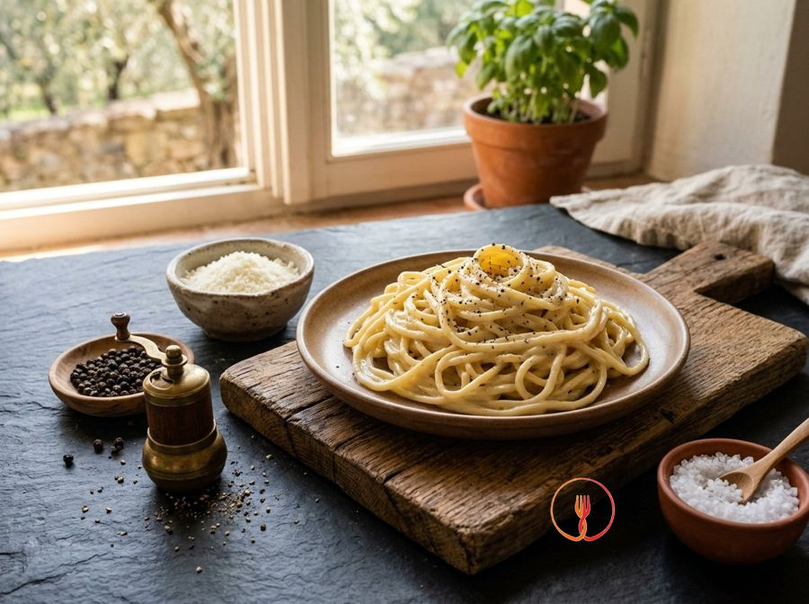

Cacio e pepe
Only three ingredients for a perfect creamy sauce.
A timeless classic that transforms a few selected ingredients into a masterpiece of flavor and creaminess. This Lazio recipe stands out for the contrast between the heat of black pepper and the saltiness of pecorino.
Ingredients
- Tonnarelli pasta (fresh egg or semolina)320 g
- Aged Pecorino Romano PDO (finely grated)200 g
- Whole black peppercorns (to be freshly ground)10 g
- Coarse salt (for boiling water)15 g
Allergens
Gluten, Milk
May contain traces of: Eggs.
Method
- Bring 3 liters of water to a boil and add 15g of coarse salt (reduced amount to balance the cheese saltiness).
- Toast whole peppercorns in a large pan over medium heat for 2 minutes, then crush them coarsely in a mortar.
- Place half of the crushed pepper back in the hot pan and deglaze with two ladles of pasta water to extract aromas and starch; turn off the heat.
- Cook the tonnarelli in boiling water, planning to drain them about 3 minutes before they are fully cooked.
- Prepare the cheese 'paste': in a bowl, combine grated pecorino with a ladle of warm pasta water (approx. 55-60°C/131-140°F).
- Whisk vigorously by hand until a thick, lump-free cream forms, adding water drop by drop if necessary.
- Transfer the very al dente pasta to the pan with the pepper and finish cooking by 'risottatura' style, adding small amounts of pasta water.
- Remove the pan from the heat (critical step: temperature must drop below 65°C/149°F to prevent the cheese from clumping).
- Add the pecorino cream and toss quickly to create a velvety emulsion between fats, starch, and water.
- Plate immediately, finishing with the remaining pepper and an extra sprinkle of pecorino if desired.
Tips
- Toast the pepper in the pan before adding water to intensify its spicy and aromatic notes.
- Create the pecorino cream by adding warm, not boiling, cooking water to prevent clumps from forming.
- Whisk the pasta vigorously off the heat to achieve a perfect emulsion between the cheese and water.
Variations
- Replace the tonnarelli with square spaghetti or mezze maniche depending on your preferred texture.
- For a different aromatic touch, try mixing the black pepper with a small amount of pink peppercorns.
Nutrition facts (estimate)
| Per serving (240 g) | Per 100 g | |
|---|---|---|
| Energy | 2069 kJ / 493 kcal | 862 kJ / 205 kcal |
| Protein | 24 g | 9.8 g |
| Carbohydrates | 56 g | 23 g |
| of which sugars | 1.8 g | 0.8 g |
| Fat | 19 g | 7.9 g |
| of which saturates | 11 g | 4.7 g |
| Fibre | 2.1 g | 0.9 g |
| Salt | 3.5 g | 1.5 g |
AI estimates based on average CREA / USDA data: indicative only, not a substitute for medical or dietitian advice.
Open the recipe in the app for the shopping list, ingredient sheets and nearby shops.